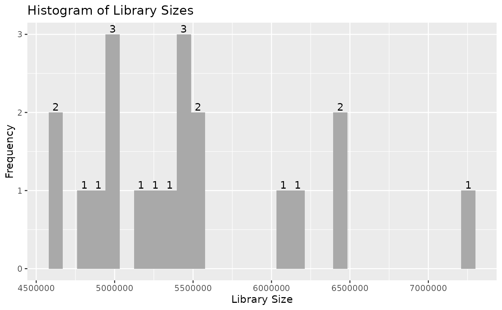
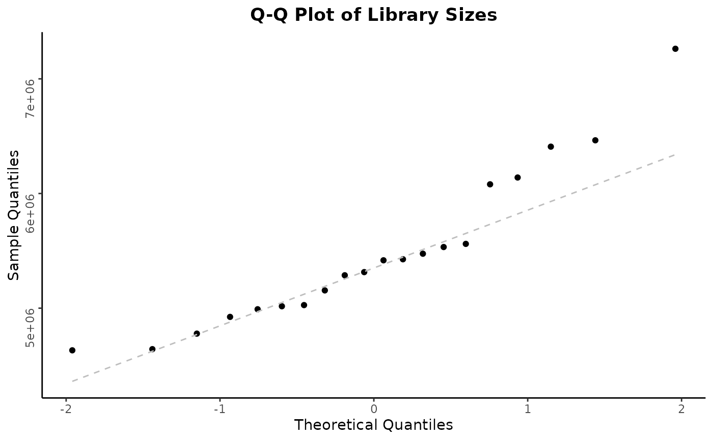
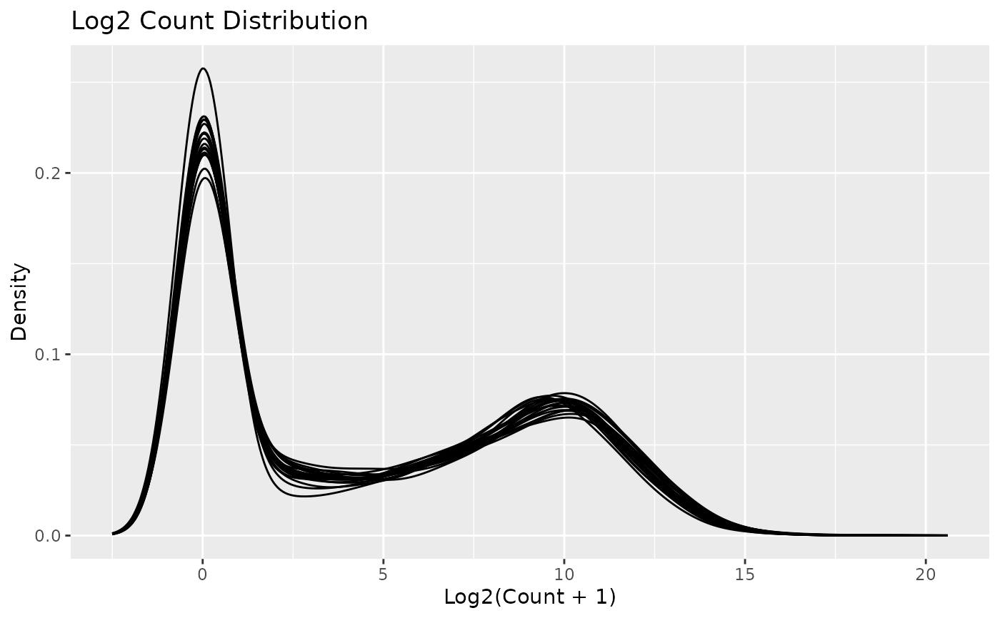
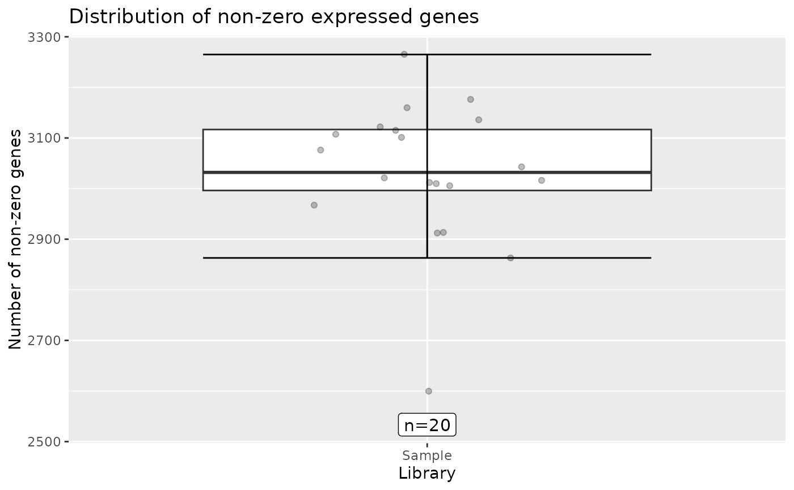
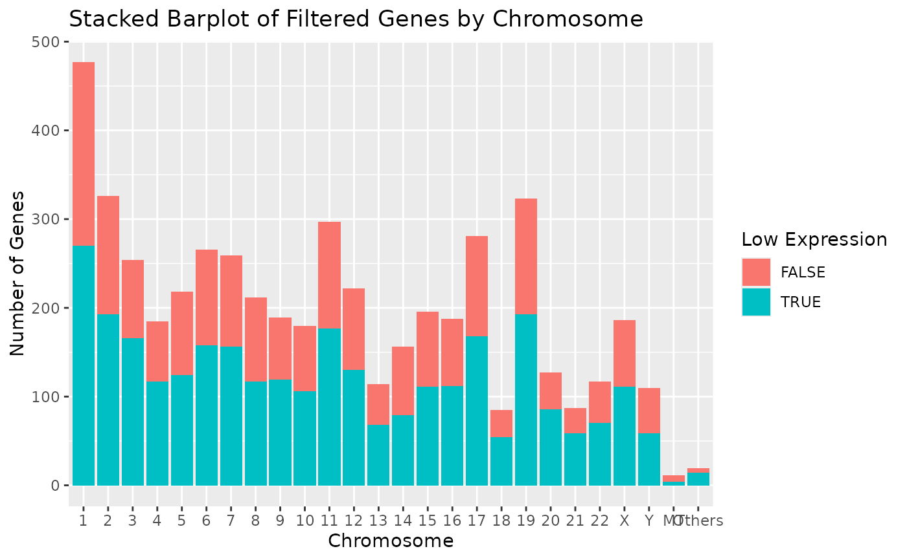

![[Experimental]](figures/lifecycle-experimental.svg)
This generates all standard plots - histogram and q-q plot of library sizes, density plot of the (log) counts distributions, boxplot of the number of number of non-zero expressed genes per sample, and a stacked barplot of low expression genes by chromosome at default setting.
Usage
# S4 method for class 'AnyHermesData'
autoplot(object)Value
A list with the ggplot objects from draw_libsize_hist(), draw_libsize_qq(),
draw_libsize_densities(), draw_nonzero_boxplot() and draw_genes_barplot()
functions with default settings.
Examples
result <- hermes_data
autoplot(result)




